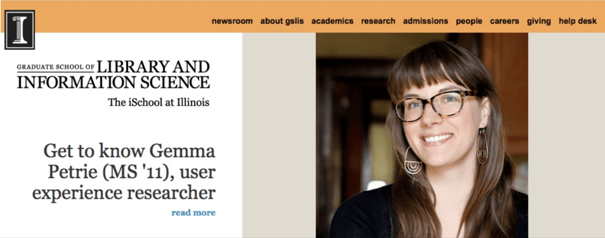

University of Illinois Profile

My alma mater, The University of Illinois, recently interviewed me about "nontraditional" librarianship. Check out the article on the GSLIS website.
Full Article:
With a background in nonprofits and a passion for keeping the web open and accessible, Gemma Petrie has put the skills she gained at GSLIS to good use in her job as a user experience researcher for Mozilla.
Where do you work and what is your role?
I work at Mozilla as a user experience researcher. It is my job to learn about the goals and challenges faced by the people we serve and to share those insights so that we can create better products.
What do you like best about your job?
I love that I work for a mission-driven organization that I am proud of and that I am constantly learning about people and their lives. Right now, my research is focused on emerging trends and unmet needs around Internet usage in Southeast Asia. I recently led field research in Thailand, and I was thrilled to have the opportunity to learn about the motivations, concerns, and behaviors of Thai Internet users.
How did GSLIS help you get to where you are today?
I spent several years working in Chicago nonprofits, where I had the opportunity to work with people experiencing various types of technology for the first time in their lives. This work had a profound effect on me, and I decided that I wanted to focus on information and technology access full time. I considered pursuing [a degree in human-computer interaction] but ultimately decided that the LIS field's focus on people and information access would provide a better theoretical foundation for the type of UX work that I find most rewarding.
What advice would you like to share with GSLIS students?
I think LIS is a great foundation for many different information and technology careers, but I'd be lying if I said I was always able to find courses relevant to my career aspirations. I'd advise any student who is interested in working in a "nontraditional" job to seek out opportunities to gain expertise in that field while still in school. I augmented my coursework through an independent study, I found an amazing internship opportunity through an alumna, I took on small pro bono UX projects to build a portfolio of work, and I co-founded the local UX Book Club chapter in Champaign-Urbana. Don't be afraid to carve out your own path in LIS. It may take extra work while you are in school, but you will be in a strong position upon graduation.
What do you enjoy doing in your spare time?
When I'm not traveling for work, I spend my time enjoying good food with friends, exploring Chicago, and spending as much time as possible outside. I also help organize the Chicago UX Book Club and chiDUXX (a professional organization for women in the UX and design fields).
What’s next for you?
I'm really proud of the work Mozilla is doing, and I plan to continue to support their efforts to keep the web open and accessible. I'm also excited to be part of Chicago's thriving tech community, and I'm always looking for new opportunities to learn from all of the amazing people here.